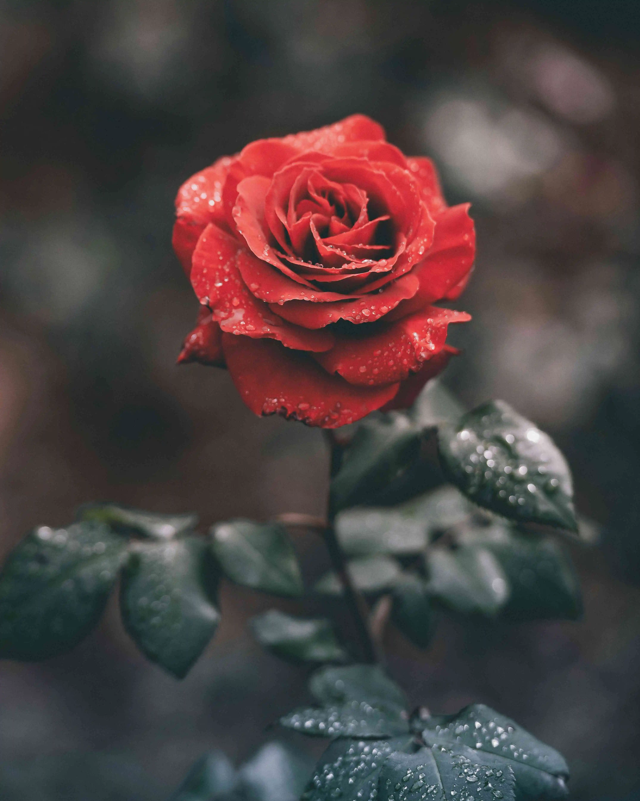
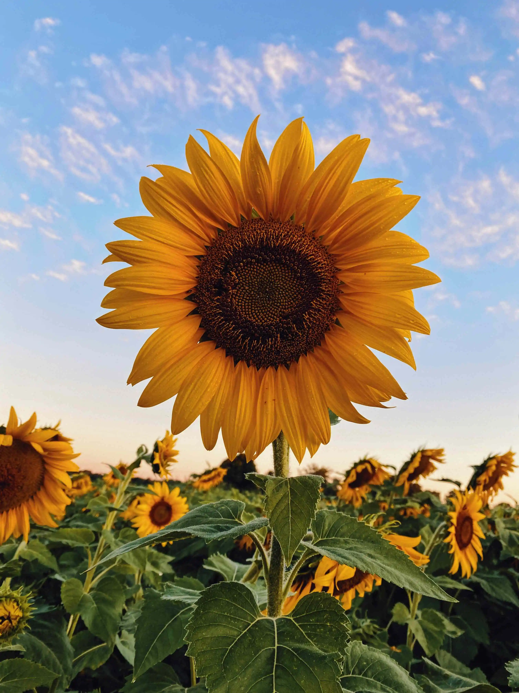
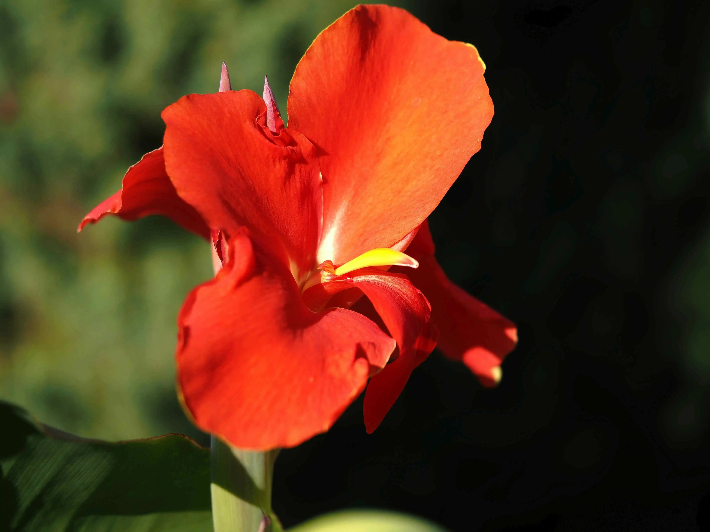
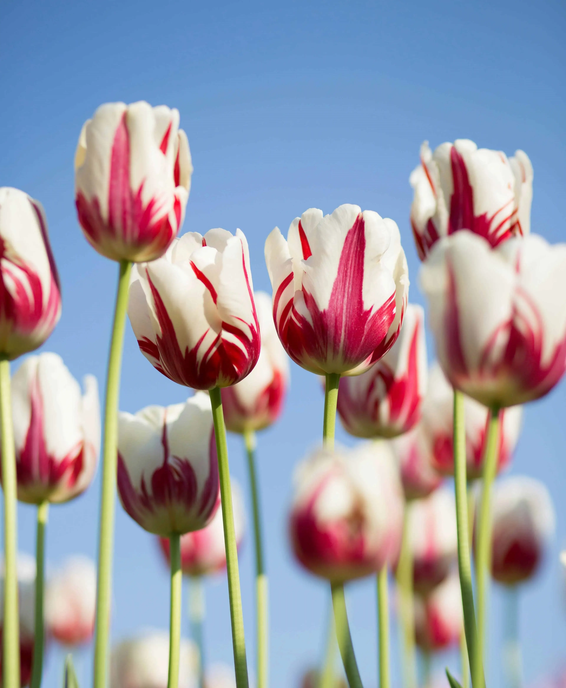
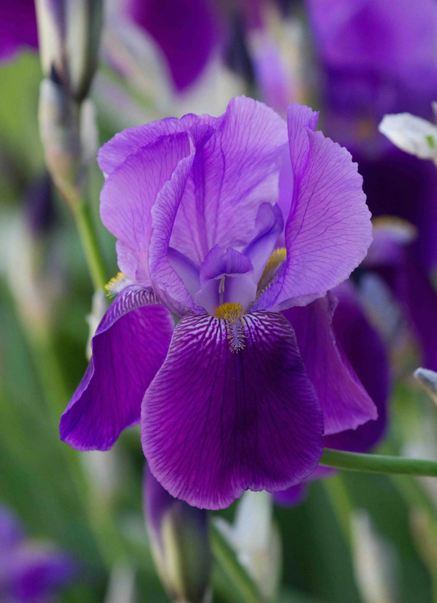
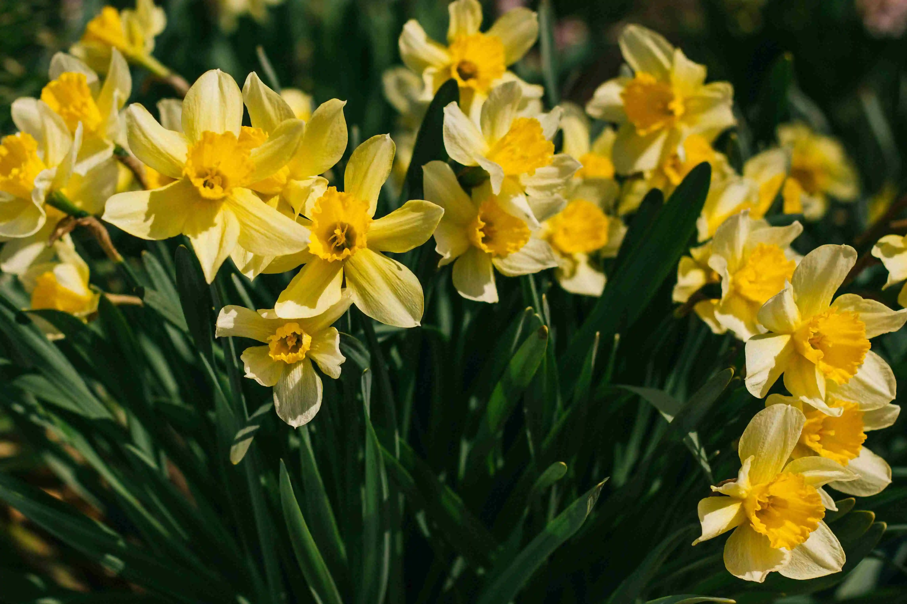

Zahradní rostliny
Tento web je zaměřen na rostliny a pěstování. Doufáme, že zde najdete užitečné informace pro vaši zahradu.
Léto

Růže
Vyžaduje teplé stanoviště. Sází se tak, aby bylo místo štěpu 3-5 cm pod půdou.

Slunečnice
Vyžaduje úrodné půdy na teplých stanovištích. Odolná proti suchu. Termín setí: duben.

Dosna
Pěstujeme od května. Dodržujeme rozestup 50 cm, aby si nestínily. Vyžadují časté zalévání a sluneční paprsky.
Jaro

Tulipán
Vyžaduje slunce. Sázíme do skupinek s mezerami 2-3 cm. Cibulky se sází na podzim.

Kosatec
Výsadbu provádíme na podzim. Vyžaduje slunné místo. Nehnojte dusíkatými hnojivy.

Narcis
Cibule vysazujeme v září až říjnu. Vyžadují slunné místo, ve stínu málo kvetou.